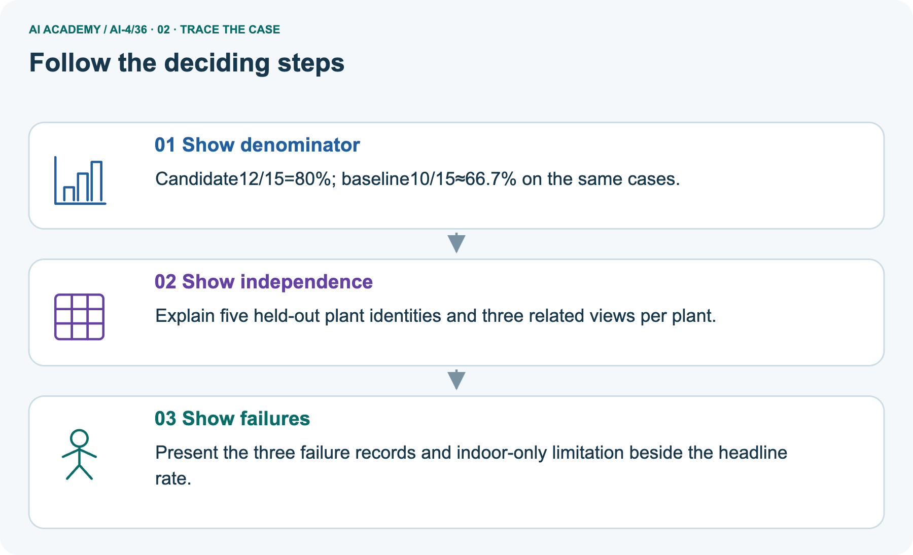
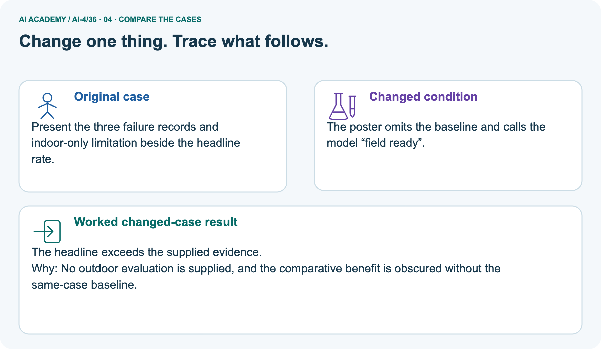
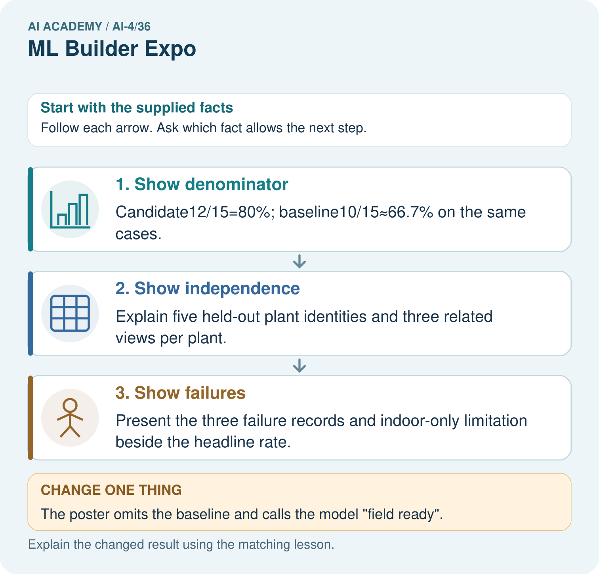
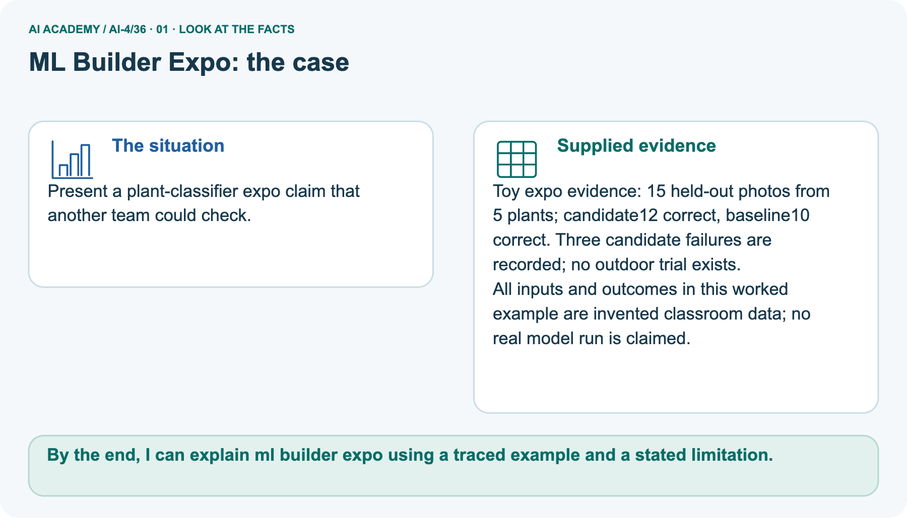
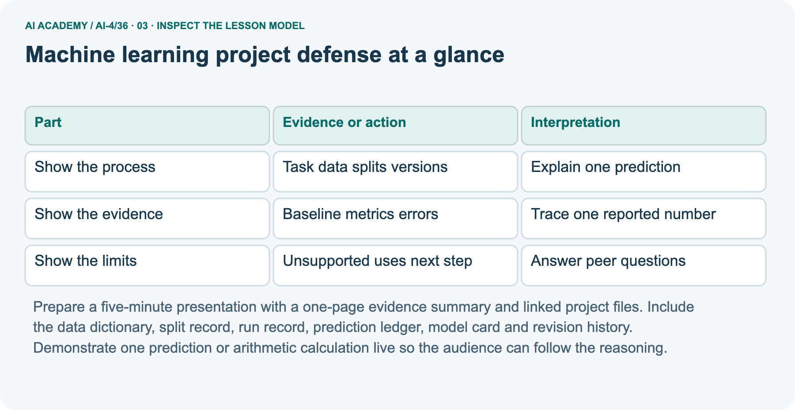
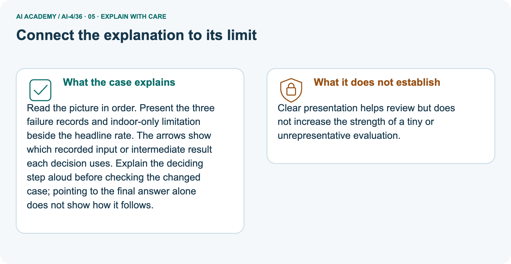
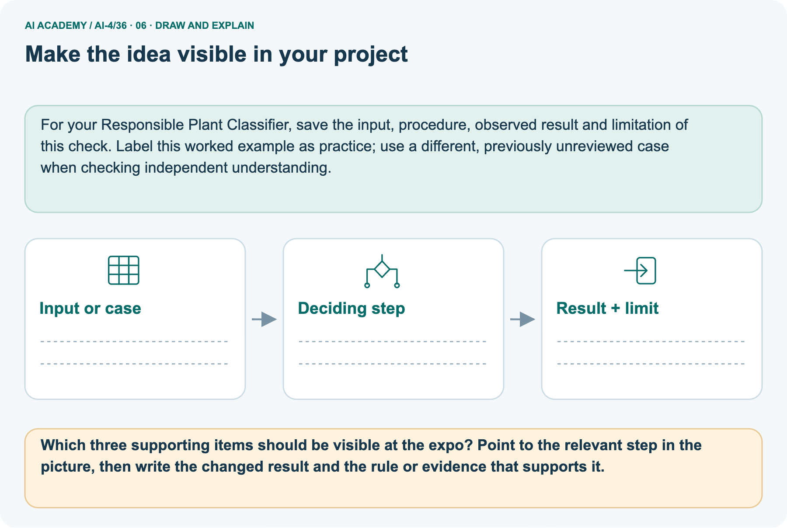

AI Academy · Level 4 · Grade 9 · Week 36 · Student lesson
ML Builder Expo
Learn to understand, design, build, test and explain AI systems responsibly.
Project: Responsible Plant Classifier
THE CONNECTED WEEK
Show the evidence. Explain the failure. Bound the claim.
Defend an auditable project with readable results,honest unknowns and a justified next investigation.
Keep one habit: Complete paper card → pictured indoor-photo limits → executable ledger audit → peer questions → independent95%claim.
Main lesson · Section 1
Can someone else check your project story?
Show the question,method,evidence,failures and limits together.
Defense goals
I can defend the project using traceable evidence.
I can explain errors and limits to a non-specialist audience.
I can respond to critique and propose an evidence-based next step.
Recall selection,documentation and controlled repair
Close your notes first. A rough first answer helps us choose the right starting point; it is not a score for your ability.
Without opening the old lesson, explain one key idea from Capstone Train, Analyze, Improve. Give an example and a mistake that the idea helps you avoid.
Without opening the old lesson, explain one key idea from Model Cards and Human Review. Give an example and a mistake that the idea helps you avoid.
Without opening the old lesson, explain one key idea from Improve Generalization. Give an example and a mistake that the idea helps you avoid.
What is the difference between a result and a claim?
End goal
By the end, I can explain ml builder expo using a traced example and a stated limitation.
Earlier wording, alternatives and picture transcripts
Your learning target
Remember before reading
After trying, check the relevant lesson or ask your teacher. Change the part of your explanation that the evidence shows was wrong.
A builder defends the complete evidence chain: problem, data, code, model, metrics, errors, fairness, limitations, and human oversight.

LEARNING TARGET Final counts are TP=12,FN=3,FP=5,TN=20. Compute accuracy, precision and recall, then state one limitation and a review trigger for the model defense.
Builder name and experiment date:
Readiness for the connected explanation
This week’s end goal
Main lesson · Section 2
Tell an evidence-linked story in everyday language
A small or unsuccessful project can still demonstrate strong reasoning.
What a defense does
A defense is an explanation that another person can question and check. Start with the task, point to the saved evidence, explain one failure and state what remains unknown. “I do not have that record yet”is a useful honest answer followed by a concrete request. The example below is a supplied paper record, not a trained system.
Your own project should use its actual saved artifacts; do not copy the paper scores or the parcel kit’s teacher-only final answers into a plant-project claim.
The final defense tells a coherent story: question, data, method, comparison, errors and limits. A strong project may conclude that the baseline is preferable or evidence is insufficient.
The aim is sound reasoning and a reproducible investigation, not an impressive headline or polished unsupported claim.
Use fictional classroom data throughout this investigation. Keep the task, units, reference labels and data split visible as you reason.
Earlier weeks supplied the model-building process; this week examines machine learning project defense.
Earlier wording, alternatives and picture transcripts
PICTURE ENTRY
Notice → Predict → Explain
Begin with visible evidence; do not explain more than the picture and information support.
MYSTERY The team must use ml builder expo to solve a model-building problem. What information do they have? What important evidence is still missing?
Name three visible details without interpreting them.
Predict the data, model, or evaluation decision being made.
Identify one hidden assumption that could change the result.
State what evidence would confirm or reject your prediction.
My prediction and supporting evidence:
A closer explanation
Main lesson · Section 3
Inspect a complete bounded paper defense
The ledger checks arithmetic;it cannot create absent training artifacts.
Complete12-case saved predictions
| Paper test ID | Reference | Frozen candidate | Fixed clear baseline |
|---|---|---|---|
| R01 | clear | clear | clear |
| R02 | clear | clear | clear |
| R03 | clear | clear | clear |
| R04 | clear | clear | clear |
| R05 | clear | clear | clear |
| R06 | clear | clear | clear |
| R07 | clear | clear | clear |
| R08 | clear | blocked | clear |
| R09 | blocked | clear | clear |
| R10 | blocked | clear | clear |
| R11 | blocked | blocked | clear |
| R12 | blocked | blocked | clear |
Complete evidence card,failures and unknowns
| Complete paper defense field | Evidence / explicit status |
|---|---|
| Task and version | Fictional parcel clear/blocked comparisonV1; blocked positive; no real handling decision. |
| Supplied test premise | 12 source-separated test cases under a frozen-procedure premise; exact training/split/code artifacts are not supplied. |
| Candidate arithmetic | TN 7, FP 1, FN 2, TP 2; 9/12=75%accuracy, 2/3 precision, 2/4 recall. |
| Same-case baseline | Fixed-clear 8/12≈66.7%; all 4 blocked cases missed. Actual training-majority counts are not supplied for this separate paper fixture. |
| Complete error records | R08 clear→blocked:false alarm; R09/R10 blocked→clear:misses. Lighting/causes are not supplied. |
| Readiness and next request | Paper arithmetic can be checked; actual reproducible model/split provenance and human review status remain unprovided. Request these records before a release claim. |
| Next investigation | If dim-condition coverage is a concern, collect labelled development evidence under a declared protocol; these rows do not identify dim-light failures. |
Example opening and its proposed next investigation
Example opening: We compared a simple classifier with an always-clear training baseline on fictional parcels. We froze the procedure before a 12-case test. Candidate accuracy was 9/12 versus baseline 8/12; candidate FP 1 FN 2.
These small synthetic results support a classroom comparison, not real parcel decisions. We would next investigate dim-condition coverage using new development data.
Before continuing, underline the decision rule and circle the evidence that supports the conclusion. Explain the example to a partner without replacing the counts or conditions with a stronger claim.
Keep the distinction between an observed result and a proposed next step.
Earlier wording, alternatives and picture transcripts
ML MECHANISM
Input → Model → Evidence
Trace the information, fitted behavior, and evaluation proof separately.


QUESTION Recompute a fresh metric and answer an unseen failure case during the defense.
MODEL IDEA A builder defends the complete evidence chain: problem, data, code, model, metrics, errors, fairness, limitations, and human oversight.
PROOF NEEDED Use an unseen case, visible calculation, error analysis, and a stated limitation.
UNDER THE HOOD Trace one leaf from source and split through preprocessing, model, prediction, and review. Recompute precision or recall from a fresh confusion matrix without notes.
Draw a fresh data → model → prediction → evaluation trace:
A closer explanation
Connect the picture and the explanation
Point to the input, the deciding step and the result in this week’s visual. Explain the same step in ordinary words. A picture helps when you can say what each part represents.
Main lesson · Section 4
Compare a checkable defense with a polished unsupported claim
Good presentation makes the evidence readable;it does not add observations.
Four evaluation conditions

NORMAL Expected data and expected behavior.

Keep this boundary clear
BOUNDARY Value close to a threshold, ambiguous label, or uncertain prediction.

MISSING Necessary field, label, source, or measurement is unavailable.

SHIFTED New lighting, species, device, subgroup, or time condition.
Keep the claim bounded
RELEASE RULE Passing one case never proves generalization. Predefine expected behavior for all four categories.
Choose a revealing case
Which case most threatens today's claim, and why?
Predict the supplied changed case
Change: The poster omits the baseline and calls the model “field ready”.
Check after predicting
Prediction: The headline exceeds the supplied evidence.
Reason: No outdoor evaluation is supplied, and the comparative benefit is obscured without the same-case baseline.
Earlier wording, alternatives and picture transcripts
EVALUATION DESIGN
Four Tests, Four Kinds of Evidence
A system is not understood until it survives more than one comfortable example.
NORMAL Expected data and expected behavior.
BOUNDARY Value close to a threshold, ambiguous label, or uncertain prediction.
MISSING Necessary field, label, source, or measurement is unavailable.
SHIFTED New lighting, species, device, subgroup, or time condition.
Change one thing in the pictured case
Main lesson · Section 6
Put the failure record beside the expo headline
Five plants,15 related views and indoor-only coverage belong in the claim.
Pictured facts and distinct scope
Present a plant-classifier expo claim that another team could check.
Toy expo evidence: 15 held-out photos from 5 plants; candidate12 correct, baseline10 correct. Three candidate failures are recorded; no outdoor trial exists.
All inputs and outcomes in this worked example are invented classroom data; no real model run is claimed.
The picture is a separate indoor plant-photo paper fixture:5 plant identities with 3 views each give 15 photo cases. Candidate12/15=80%, baseline 10/15≈66.7%. Related views do not become 15 independent plants. The three candidate failures are represented in the complete supplementary ledger below; their causes are not established. No outdoor observations are supplied.
Keep this record separate from the main 12-parcel defense and from the 72-row capstone kit.
Complete supporting photo/plant ledger
| Indoor picture photo / plant group | Toy reference | Candidate | Fixed clear baseline |
|---|---|---|---|
| F01 / G1 | clear | clear | clear |
| F02 / G1 | clear | clear | clear |
| F03 / G1 | clear | blocked | clear |
| F04 / G2 | clear | clear | clear |
| F05 / G2 | clear | clear | clear |
| F06 / G2 | clear | clear | clear |
| F07 / G3 | clear | clear | clear |
| F08 / G3 | clear | clear | clear |
| F09 / G3 | clear | clear | clear |
| F10 / G4 | clear | clear | clear |
| F11 / G4 | blocked | clear | clear |
| F12 / G4 | blocked | blocked | clear |
| F13 / G5 | blocked | blocked | clear |
| F14 / G5 | blocked | clear | clear |
| F15 / G5 | blocked | blocked | clear |
Trace evidence,failures and limits



Read the picture one step at a time
Read the picture in order. Present the three failure records and indoor-only limitation beside the headline rate. The arrows show which recorded input or intermediate result each decision uses.
Explain the deciding step aloud before checking the changed case; pointing to the final answer alone does not show how it follows.
Predict the field-ready publicity claim
Change one thing: The poster omits the baseline and calls the model “field ready”. Predict the result before checking the explanation. What remains the same?
Check after predicting



Explain why polish is insufficient
Clear presentation helps review but does not increase the strength of a tiny or unrepresentative evaluation.
Read the labelled picture: Which three supporting items should be visible at the expo? Point to the relevant step in the picture, then write the changed result and the rule or evidence that supports it.
Return to the evidence-file audit
Machine learning project defense at a glance
Earlier wording, alternatives and picture transcripts
WORKED EVIDENCE
Reason Step by Step
Predict first. Then check each step. A correct answer without visible evidence cannot be audited.

STEP 1 Trace one leaf from source and split through preprocessing, model, prediction, and review.
STEP 2 Recompute precision or recall from a fresh confusion matrix without notes.
STEP 3 Run an unseen low-light or missing-feature case and follow the documented fallback.
STEP 4 State intended use, do-not-use, subgroup limitation, provenance, and who remains accountable.
CHECK Verify the denominator, unit, split, class definition, and data version before interpreting a score.
Recalculate, retrace, or restate the evidence independently:
A closer explanation
Learn from the worked case
Cover the result before checking it. Say what is given, choose the procedure, and follow one step at a time. Then uncover the result and explain your first mismatch. Ask why a step is allowed, not only what number it produces.
A pictorial worked case: ML Builder Expo
The facts we will use



Why this result follows
What this example does not establish
Main lesson · Section 7
Find the first unsupported step in a smooth defense
A serious data problem cannot be hidden by presentation marks.
Challenge the demonstration-only claim
Diagnose one cause and name the cleanest next experiment:
CLAIM TO CHALLENGE A smooth prepared demo proves the model is reliable and ready for use.
Read the four separate rubric dimensions
The teacher rubric has four dimensions scored 0, 1, 2: valid data/splits, reproducible method, complete evaluation, and honest communication.
Two means evidence is complete and explainable; one means partial evidence with identified gaps; zero means absent or materially incorrect.
Report dimensions separately; a serious leakage problem cannot be hidden by presentation points.
Choose the next investigation
Earlier wording, alternatives and picture transcripts
ERROR DETECTIVE
Compare → Diagnose → Repair
Do not patch the answer. Find the earliest unsupported assumption, data problem, or experiment error.

| Evidence record | Expected | Actual | Likely cause / next test |
|---|---|---|---|
| normal case | passes | ||
| boundary case | defined behavior | ||
| missing case | safe fallback | ||
| shifted case | measured limit |
A closer explanation
Main lesson · Section 8
Answer peer questions with records and honest unknowns
Mark feedback resolved,deferred or requiring new evidence.
Try the supported evidence-file audit
Use workbook W2 for the connected example “Machine learning project defense”. First fill the input and rule boxes. Try the middle steps before asking for a hint. After a hint, try the next step yourself.
| Plan | Do | Check |
|---|---|---|
| What is given? Which rule or procedure applies? | Record each intermediate step. | Does the result follow? What remains unknown? |
Explain your trace to a partner. Your partner points to one step to check. Swap roles on the next case. Each person writes their own explanation.
Ask and record the three review questions
Peers ask three questions: what influenced model selection, which cases failed, and what evidence would change the conclusion? Respond using saved records. If an answer is unknown, say so and name the evidence needed.
Record feedback as resolved, deferred with reason, or requiring new data.
Explain the evidence beyond a final answer
Use the worked case for Machine learning project defense. Proposed explanation: “A final answer is enough”. Decide whether this explanation is supported.
Point to the step or supplied fact that decides; explain your repair if needed.
Answer on your own before discussion. If you are unsure, say which step you need help with.
Answer the pictured supporting-items question
Which three supporting items should be visible at the expo? Point to the relevant step in the picture, then write the changed result and the rule or evidence that supports it.
Reserve the fresh95%claim
This is supported practice. Keep the separately named independent case for an attempt before feedback.
Earlier wording, alternatives and picture transcripts
ML STUDIO
Specify Before You Run
A trustworthy result can be reproduced from the recorded data, code, settings, and evaluation rule.

Experiment record
QUESTION + intended use + success threshold
DATA version + grouped split + leakage check
CODE/preprocessing + features + model + settings + seed
METRICS + positive class + units + denominators
PREDICTIONS + errors + subgroup slices + limitations
HUMAN reviewer + release, revise, limit, or stop decision
Write the minimum record needed to reproduce today's result:
A closer explanation
Practise with less help: Trace evidence
Check your reasoning
Explain the picture
Main lesson · Section 9
Run a complete evidence-audit and peer-review expo
Every shared question has supplied inputs and an honest answer boundary.
Complete runnable paper arithmetic audit
# Complete fictional paper expo ledger; this is not a fitted classifier.
records = [
{'id': f'R{i:02}', 'reference': 'clear' if i <= 8 else 'blocked',
'candidate': 'clear' if i <= 7 or 9 <= i <= 10 else 'blocked',
'baseline': 'clear'} for i in range(1, 13)
]
def audit(rows, field):
if not rows or len({r['id'] for r in rows}) != len(rows):
raise ValueError('Need nonempty uniquely identified records')
cells = [0, 0, 0, 0] # TN, FP, FN, TP; blocked positive
for r in rows:
if r['reference'] not in ('clear', 'blocked') or r[field] not in ('clear', 'blocked'):
raise ValueError('Missing reference or prediction; do not guess')
cells[2 * (r['reference'] == 'blocked') + (r[field] == 'blocked')] += 1
tn, fp, fn, tp = cells
return {'cells': cells, 'correct': tn + tp, 'total': len(rows),
'precision': tp / (tp + fp) if tp + fp else None,
'recall': tp / (tp + fn) if tp + fn else None,
'errors': [r['id'] for r in rows if r[field] != r['reference']]}
print('candidate', audit(records, 'candidate'))
print('baseline', audit(records, 'baseline'))
print('Paper arithmetic reproduced; actual training/code/split provenance remains unprovided.')
Five complete reviewer questions
| Complete reviewer question | Evidence-linked answer / next action |
|---|---|
| What influenced selection? | The paper premise says frozen before test, but does not provide exact selection logs. Request the original data/code/split/run/freeze records; do not claim you have inspected them. |
| Where did it fail? | R08 false alarm, R09/R10 misses; no lighting/source-condition cause is given. Show all three and request condition records if needed. |
| Is it better than baseline? | 9/12 versus 8/12 on these cases; one false alarm added, two blocked misses prevented. No universal gain is established. |
| What would change your conclusion? | Invalid split/provenance, unreviewed labels or unsupported intended-use coverage would require investigation and a revised claim. Collect new development evidence, then new frozen final evidence for a changed version. |
| Can you release it for real use? | This supplied fictional paper record supports a classroom audit only. No runnable classifier artifacts, actual teacher approval or real-use readiness is established. |
Normal,boundary,missing and shifted situations
| Complete expo probe | Defensible action |
|---|---|
| Normal complete twelve-pair ledger | Recompute candidate 9/12, baseline 8/12; precision 2/3, recall 2/4. |
| Boundary zero predicted positives in clear baseline | Precision undefined, not perfect; recall 0/4. |
| Missing model/code/split artifacts | Say not supplied; request them. A ledger alone cannot reproduce training. |
| Missing plant feature at a live demo | Follow the project’s documented reject/review policy. If none exists, stop and document that gap; do not fabricate a prediction. |
| Shifted outdoor plant request | No outdoor coverage is supplied in the pictured record; mark unsupported and propose a separate evidence collection rather than claiming the indoor score applies. |
Present,review,swap and retain responses
Expo Defense:in pairs, one presenter uses the complete paper card, ledger and program while the reviewer asks the five supplied questions. Swap roles and retain each learner’s explanation and feedback status. For your actual project, show the real saved artifacts and actual results instead of this paper fixture.
The normal, boundary, missing and shifted probes above are complete audit situations, not claimed runs of an absent classifier. Keep the selected 95%claim for an uncoached first review; the teacher may assign a separate unseen calculation after checking its key.
Keep the evidence ledger
| Case | Prediction | Actual | Calculation / evidence | Meaning / next test |
|---|---|---|---|---|
| Normal | ||||
| Boundary | ||||
| Missing | ||||
| Shifted |
Before trying: what do I expect, and why? While trying: which step could first go wrong? Afterwards: what did I actually observe, and what should change? Keep “not run” if you only traced the procedure.
Earlier wording, alternatives and picture transcripts
EVIDENCE LAB
Predict → Run → Calculate → Interpret
Keep the test conditions fixed, record every result, and change only one planned factor.

1. Write the hypothesis and expected evidence before running.
2. Expo Defense: present the evidence bundle, accept a fresh calculation and transfer case, explain one failure, and defend a release decision.
3. Run one normal, one boundary, one missing, and one shifted case.
4. Calculate the metric from raw counts or row-level errors.
5. Interpret what changed, what did not, and what remains unsafe or unknown.
Plan → try → check
Main lesson · Section 14
Try alone: review a fresh polished95%claim
Give three concrete evidence requests and explain the remaining use limit.
Complete selected defense claim and scope
Review a defense claiming 95 percent success on 20 cases but omitting the baseline, split history and errors. Give three revision requests and explain why polish is insufficient.
The selected independent defense reports 95%on20 cases but omits its baseline, split history and errors. Treat95%as a reported claim:if exact and all 20 scored, it would mean 19 correct, but no ledger verifies that. Request the missing evidence rather than invent a confusion matrix or assume reliability across schools. Keep this case separate from the worked 12-case defense and pictured 15-photo record.
First attempt and support record
Attempt this case before feedback. Record any help. Earlier examples below are further practice; a case already practised with feedback cannot establish fresh transfer.
Your teacher has the independent answer and scoring criteria. Complete the matching workbook week to keep your practice evidence together.
Use feedback after trying
Attempt the independent case before hints. Record whether you worked alone, used a hint or followed a model. After feedback, fix the first unsupported step and explain why it changed.
A later check uses a changed case, not a copied answer.
Earlier wording, alternatives and picture transcripts
Independent case: Apply independently
Week 36 Independent application
Close the worked explanation. Apply the idea to this different question without copying.
Your expo model succeeds on three demonstration plants. What evidence should accompany the demo and what limitation should you state?
My answer, with a trace, calculation or supporting evidence
Create and test
Change one relevant detail. Predict the result before testing. Include a boundary or missing-information case when it helps reveal a limit.
My changed input and expected result
Connect to your project
Deliver the final Responsible Plant Classifier product card, live evidence trace, model card, and human-oversight commitment.
The evidence I will keep
Transfer practice from the original programme
Final counts are TP=12,FN=3,FP=5,TN=20. Compute accuracy, precision and recall, then state one limitation and a review trigger for the model defense.
Use feedback to improve
Main lesson · Section 11
Leave one complete project evidence bundle
The project’s own files and limits should support every reported result.
Final artifact and evidence
THIS WEEK'S CHECKPOINT Deliver the final Responsible Plant Classifier product card, live evidence trace, model card, and human-oversight commitment.
Deliver the actual project question, label definition, data/source/split record, code/preprocessing/model versions, selection/freeze history, baseline and candidate prediction ledgers, metrics/errors/slices, model card and actual review status. Trace one case from available input through the saved model to evaluation and fallback. State which checks were run, traced, not run or unsupported.
A polished poster and copied example scores do not replace these artifacts. Propose one next investigation tied to a documented limitation, and reserve fresh final evidence for a later changed version.
For your Responsible Plant Classifier, save the input, procedure, observed result and limitation of this check.
Label this worked example as practice; use a different, previously unreviewed case when checking independent understanding.
Versions,uncertainty and human review
Which requirement or risk does this artifact address?
Which dataset, split, code, and metric version does it use?
What normal and shifted cases were tested?
What remains uncertain or weak?
What decision still belongs to a teacher or qualified human?
RESPONSIBLE RELEASE Never use this classroom prototype for medical, pesticide, agricultural, or other consequential decisions.
My evidence-linked project decision:
Earlier wording, alternatives and picture transcripts
CUMULATIVE PROJECT
Responsible Plant Classifier
Every week adds one reviewable artifact to the same evidence-based capstone.

Evidence for your project
Main lesson · Section 16
Finish with a claim you can defend and a limit you can explain
Use the evidence to choose the next learning step.
Retrieve and explain
Close your notes. Explain this goal in your own words: Defend the project using traceable evidence
Plan an uncoached changed-case return
If you are unsure, return to the worked picture and explain one arrow. If you are ready, change an input or assumption and justify your prediction.
Save your workbook evidence. At the next review, try a different case before opening your old answer.
Reference bank and extra practice
Choose the reference that helps your next step.
Reference · Words for the current experiment
Reference · Section 5
Reference · Words for the current experiment
Tie each word to a particular input, fitted choice or evidence record.
Core vocabulary
| Term | Precise meaning | My ML example |
|---|---|---|
| technical defense | evidence-based explanation under questions | |
| traceability | link claim to data, code, result, and decision | |
| transfer test | fresh case not rehearsed | |
| release decision | approve, limit, revise, or stop |
Closer-explanation terms
| Word | Meaning |
|---|---|
| Defense | An explanation of decisions supported by inspectable evidence |
| Traceability | Ability to follow a claim back to its source |
| Limitation | A boundary on interpretation or supported use |
| Reflection | An account of learning and justified next steps |
Earlier wording, alternatives and picture transcripts
VOCABULARY
Words You Can Calculate and Defend
A definition matters when it lets you interpret a new dataset, model, or result.


MISCONCEPTION TO REPAIR A smooth prepared demo proves the model is reliable and ready for use.
Repair the claim using a definition, calculation, or test record:
Words used in the closer explanation
Extra challenge · Build a stronger explanation
Reference · Section 10
Extra challenge · Build a stronger explanation
Choose the next useful challenge after the main route.
Thinking ladder
DEFINE Use all four terms precisely: technical defense, traceability, transfer test, release decision.
CALCULATE Reproduce the worked evidence with units and denominator.
TRACE Explain the data, code or decision path.
DIAGNOSE A smooth prepared demo proves the model is reliable and ready for use.
TRANSFER Solve a fresh dataset or model case.
IMPROVE Change one cause and rerun fixed evidence.
DEFEND State intended use, metric, limitation, and human responsibility.
MASTERY RULE A coached calculation becomes mastery only after a different case is completed independently.
Earlier wording, alternatives and picture transcripts
MASTERY
From Knowing the Word to Owning the Idea
Move upward only when you can produce evidence without copying the example.

Reference · Inspect your evidence
Reference · Section 12
Reference · Inspect your evidence
Use after practice; keep the selected fresh95%defense claim for the individual attempt.
Experiment evidence checklist
□ Define the task, feature/target roles, and intended-use boundary.
□ Show the calculation, code trace, or experiment record.
□ Test a normal case and one revealing boundary, missing, or shifted case.
□ Diagnose one failure without changing several factors at once.
□ Name a limitation, fairness concern, and the human-review action.
Independent evidence and defense:
My level: □ Not yet □ With one hint □ Independently □ I can teach and defend it
Earlier wording, alternatives and picture transcripts
INDEPENDENT PROOF
Explain • Calculate • Transfer • Defend
Complete this with a fresh case after guided practice and compare it with the mastery criteria.

REQUIRED PROOF Recompute a fresh metric and answer an unseen failure case during the defense.
NEXT BRIDGE Carry the experiment evidence into: AI-5 AI Programmer.
Extra practice · Earlier complete case
Reference · Section 13
Extra practice · Earlier complete case
Attempt the question before opening its worked explanation.
Situation and question
Final classifier gets16/20 correct; two of four errors are false negatives.
Report supported metrics and what is missing.
Your explanation
Which detail supports the answer, and why does it matter?
Check after trying
Accuracy80%. Recall cannot be computed from FN alone; actual positives or TP are needed. Show full matrix, limits and review path.
| Evidence or stage | Value or result |
|---|---|
| Correct final predictions | 16/20 |
Earlier wording, alternatives and picture transcripts
Week 36 Worked case
Use the supplied details to practise the weekly concept before attempting the independent question. This case extends the illustrated lesson.
The situation
The question
Worked explanation
Explain it in your own words
Trace the supplied case visually
Report only metrics the evidence supports
Final classifier gets16/20 correct; two of four errors are false negatives.
Report supported metrics and what is missing.
Accuracy80%. Recall cannot be computed from FN alone; actual positives or TP are needed. Show full matrix, limits and review path.
Reference · Earlier route checklist
Reference · Section 15
Reference · Earlier route checklist
Use one main route; revisit the checklist only when useful.
Checklist and first prediction
| By the end, I can | How I will show it |
|---|---|
| Defend the project using traceable evidence | Explain the deciding step, show a trace or test, and state one limit. |
| Explain errors and limits to a non-specialist audience | Explain the deciding step, show a trace or test, and state one limit. |
| Respond to critique and propose an evidence-based next step | Explain the deciding step, show a trace or test, and state one limit. |
Remember → watch and explain → try with help → investigate → try independently → keep project evidence. Your teacher may spread this lesson across several classes.
Keep your first prediction. Compare it with what the evidence shows and explain any change.
Earlier wording, alternatives and picture transcripts
Start with this question: Present a plant-classifier expo claim that another team could check.
Extra practice · Predict, check and repair
Reference · Section 17
Extra practice · Predict, check and repair
Keep supported feedback separate from the reserved independent case.
First supported question and hint
Present a plant-classifier expo claim that another team could check.
Which labelled step matches this detail? Present the three failure records and indoor-only limitation beside the headline rate.
1. Show failures
2. Show independence
3. Show denominator
Hint if needed: Read the steps in the pictorial case. Match the supplied detail to the stage that performs or records it.
Practice 1: explain the deciding evidence
Check the first explanation
After your attempt, compare with the supported explanation: Show failures Present the three failure records and indoor-only limitation beside the headline rate. Read the picture in order.
Present the three failure records and indoor-only limitation beside the headline rate. The arrows show which recorded input or intermediate result each decision uses.
Explain the deciding step aloud before checking the changed case; pointing to the final answer alone does not show how it follows.
Changed-case question and hint
Changed-case practice: The poster omits the baseline and calls the model “field ready”. Which conclusion is supported by the supplied facts?
1. The headline exceeds the supplied evidence.
2. This one example guarantees correct results for every future input.
3. We can decide the result without examining the changed input or the procedure.
Hint if needed: Use the changed condition and the deciding step in the pictorial trace. The answer must say what follows from those facts.
Practice 2: explain the deciding evidence
Check the changed explanation
After your attempt, compare with the supported explanation: The headline exceeds the supplied evidence. No outdoor evaluation is supplied, and the comparative benefit is obscured without the same-case baseline.
Repair and keep the record
Review Capstone Train, Analyze, Improve (ai-4/35). Goal: Run a frozen final evaluation with complete accounting. Short practice: Why is “the revision is better” incomplete?
Point to the relevant step in the picture, then write the changed result and the rule or evidence that supports it.. Return to this week and explain what you changed.
Review Model Cards and Human Review (ai-4/33). Goal: Write a model card whose claims match evidence. Short practice: Write a bounded replacement for the publicity sentence.
Point to the relevant step in the picture, then write the changed result and the rule or evidence that supports it.. Return to this week and explain what you changed.
Review Improve Generalization (ai-4/30). Goal: Plan one evidence-led change and test it on source-separated validation cases. Short practice: What fresh evidence is needed after adding crossed training data? Point to the relevant step in the picture, then write the changed result and the rule or evidence that supports it.. Return to this week and explain what you changed.
Use Download completed work in the hosted lesson to export your answers, reflections, practice feedback and code-run evidence. Open the HTML copy to read or print it.
Drafts stay in this browser when storage is available; clear drafts on a shared device.
Earlier wording, alternatives and picture transcripts
Use this supported practice once, in the browser or on paper. Keep the reserved independent assessment for a separate first attempt before teacher feedback.
Repair a missing building block
Keep your completed work
Reference · The six-picture journey
Reference · Section 18
Reference · The six-picture journey
Choose the picture needed for the current question.
01. ML Builder Expo: the case



Present a plant-classifier expo claim that another team could check. Supplied facts: Toy expo evidence: 15 held-out photos from 5 plants; candidate12 correct, baseline10 correct.
Three candidate failures are recorded; no outdoor trial exists. All inputs and outcomes in this worked example are invented classroom data; no real model run is claimed.
Point to the given fact that matters most. Explain why it matters.
02. Follow the deciding steps
Show denominator: Candidate12/15=80%; baseline10/15≈66.7% on the same cases. → Show independence: Explain five held-out plant identities and three related views per plant. → Show failures: Present the three failure records and indoor-only limitation beside the headline rate.
Point to each numbered stage and explain which recorded input it uses.
03. Machine learning project defense at a glance



Machine learning project defense at a glance. Show the process | Task data splits versions | Explain one prediction. Show the evidence | Baseline metrics errors | Trace one reported number.
Show the limits | Unsupported uses next step | Answer peer questions
Read the labels and values. Explain the relationship the model shows.
04. Change one thing. Trace what follows.
Original case: Present the three failure records and indoor-only limitation beside the headline rate. Changed condition: The poster omits the baseline and calls the model “field ready”.
Expected result: The headline exceeds the supplied evidence. Reason: No outdoor evaluation is supplied, and the comparative benefit is obscured without the same-case baseline.
Predict before checking the worked changed-case result. Name what changed and what the supplied facts allow you to conclude.
05. Connect the explanation to its limit



Read the picture in order. Present the three failure records and indoor-only limitation beside the headline rate. The arrows show which recorded input or intermediate result each decision uses.
Explain the deciding step aloud before checking the changed case; pointing to the final answer alone does not show how it follows.
Limit: Clear presentation helps review but does not increase the strength of a tiny or unrepresentative evaluation.
Explain the case, then point to a limit on the claim.
06. Make the idea visible in your project



For your Responsible Plant Classifier, save the input, procedure, observed result and limitation of this check.
Label this worked example as practice; use a different, previously unreviewed case when checking independent understanding. Draw your input, deciding step, result and limit.
Supported question: Which three supporting items should be visible at the expo? Point to the relevant step in the picture, then write the changed result and the rule or evidence that supports it.
Draw your project trace and justify the deciding step using evidence.